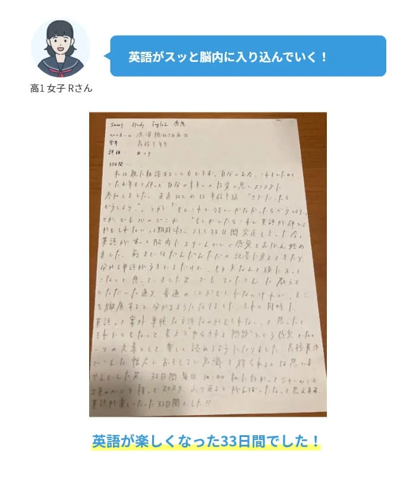
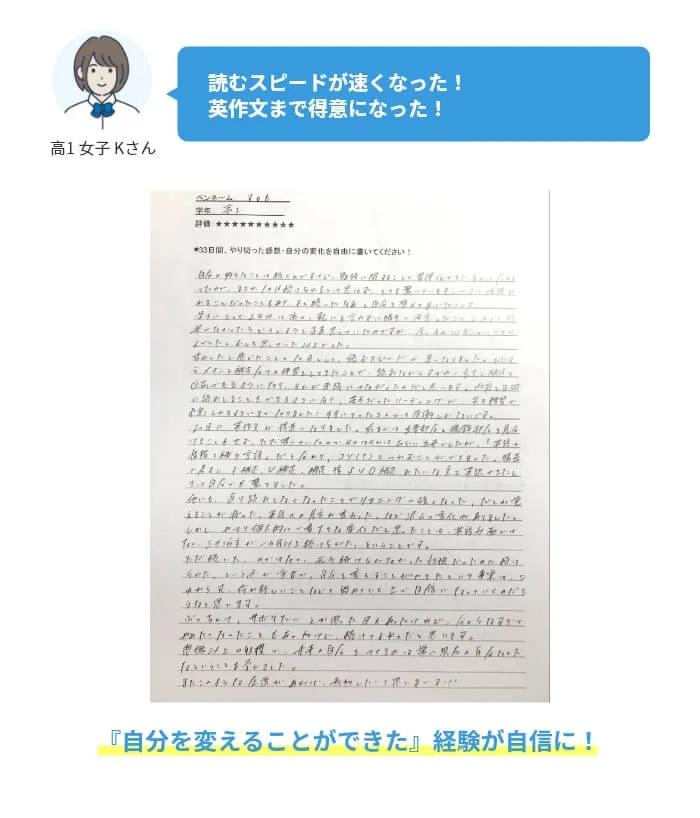
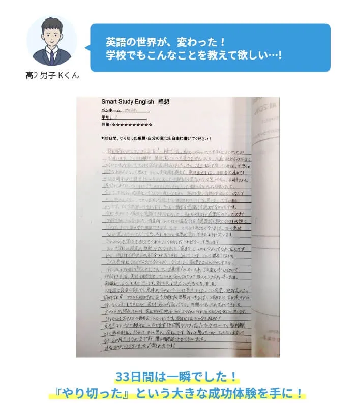
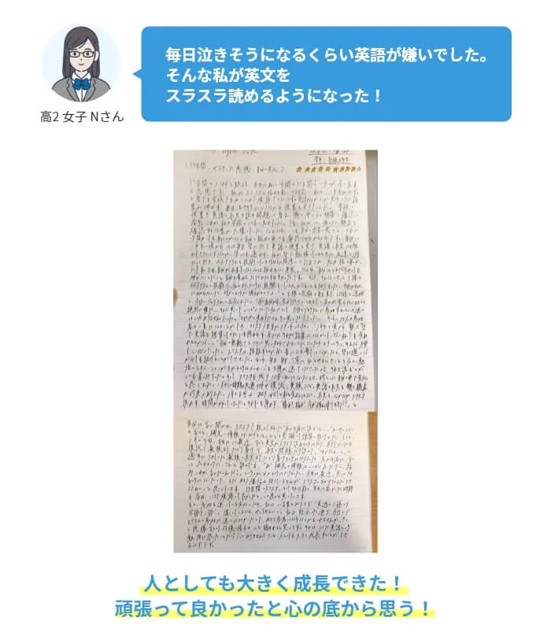
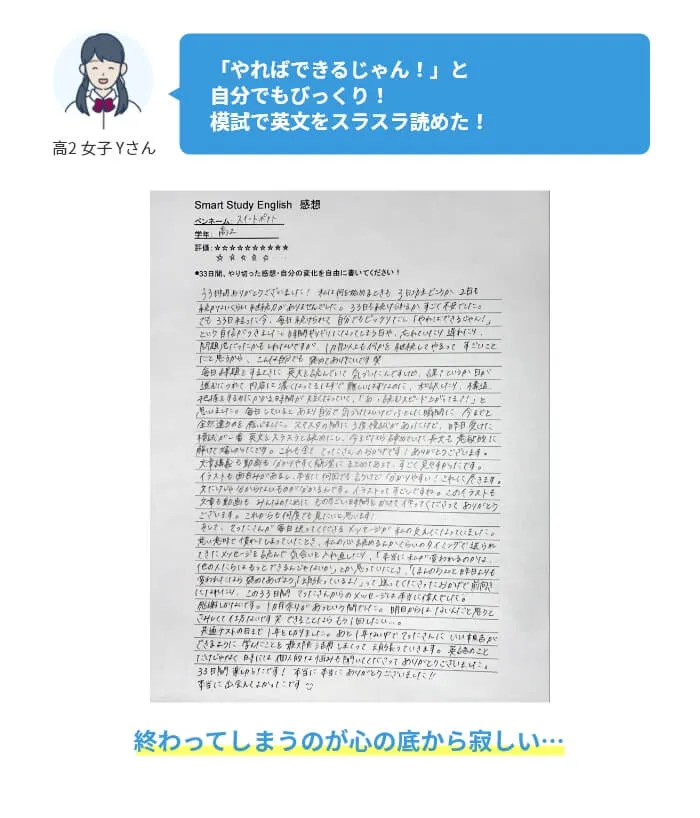
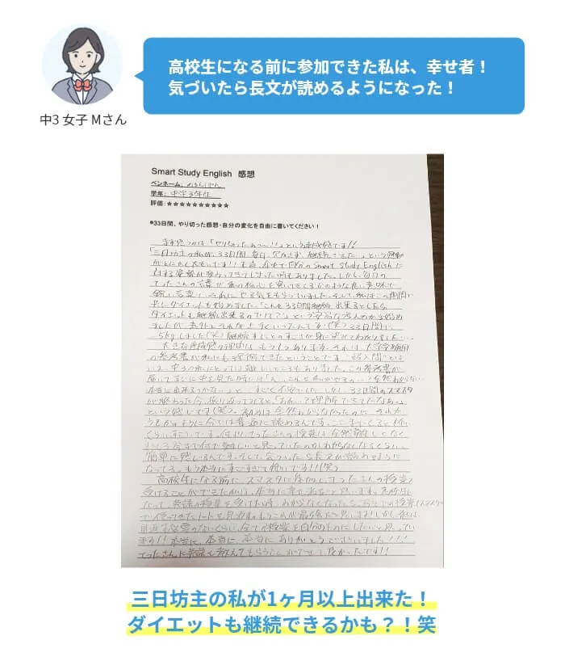
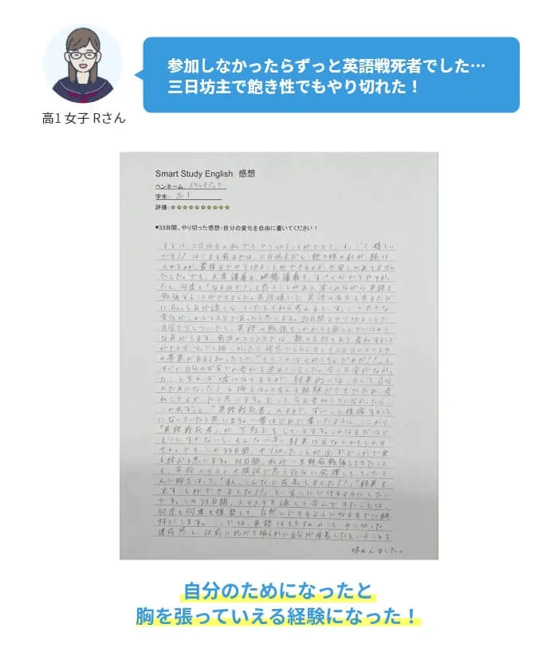
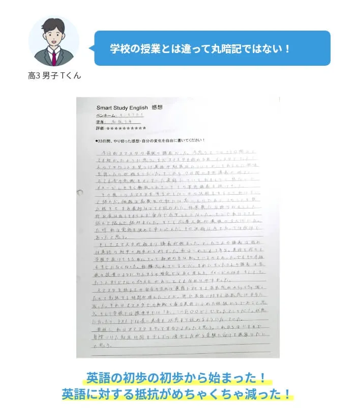

04
The Proof
実績と、今回の募集
累計2000名以上の生徒が変化を実感した、英語の超人気企画が大幅アップデート。
プログラムを終えた生徒たちが、自らの手で書いてくれた感想です。スマホで打てる時代に、わざわざ手書きで書いてくれる。それが、本物の変化の証明です。
2,000+ 累計参加者
手書き感想1000枚超
★9.8/10 平均評価
手書き感想1000枚超が、すべてを語る。
← スワイプで他の感想を見る →












先着30名限定
大幅にサポートが進化したので、今回30名限定でモニター募集。
累計2000名以上が体験してきた英語の読み方トレーニングを、さらに手厚い伴走体制へアップデートしました。今回だけの特別枠です。
なんと今回は塾長自らが、完全に一人ひとり個別で状態チェック。あなたのつまずきを見逃さず、徹底的に伴走します。